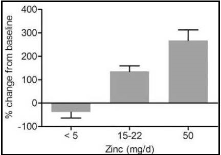

Figure 24c.8 Metallothionein expression in leukocytes. Values are percentage
changes from baseline ± SEs for all studies that examined metallothionein
expression in leukocytes. In studies that determined metallothionein
expression at multiple time points (19–21), the day with the greatest
percentage change was used. Data are grouped based on the amount
of dietary zinc consumed per day. From Hennigar et.al.
(2016) Advances in nutrition (Bethesda, Md.), 7(4), 735–746.
© oup.com